Серия 3.407.1-136 выпуск 2: Железобетонные опоры ВЛ 0,38кВ
НазадСерия 3.407.1-136 выпуск 2 содержит карты технического уровня и качества продукции на железобетонные стойки СВ 95-2 и СВ 105. Расход металлоконструкций на опоры К1п, ОА1п, ОА3п принимается, соответственно, по опорам К1, ОА1 и ОА3, но при этом вместо оголовка ОГЗ применяется траверса ТН4 и хомут Х12.
Серия 3.407.1-136 выпуск 2
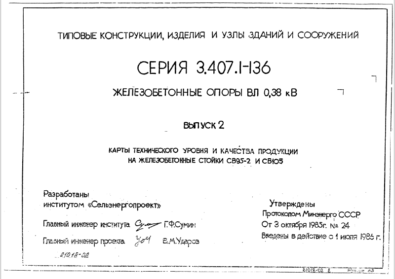Наверх Страница 01
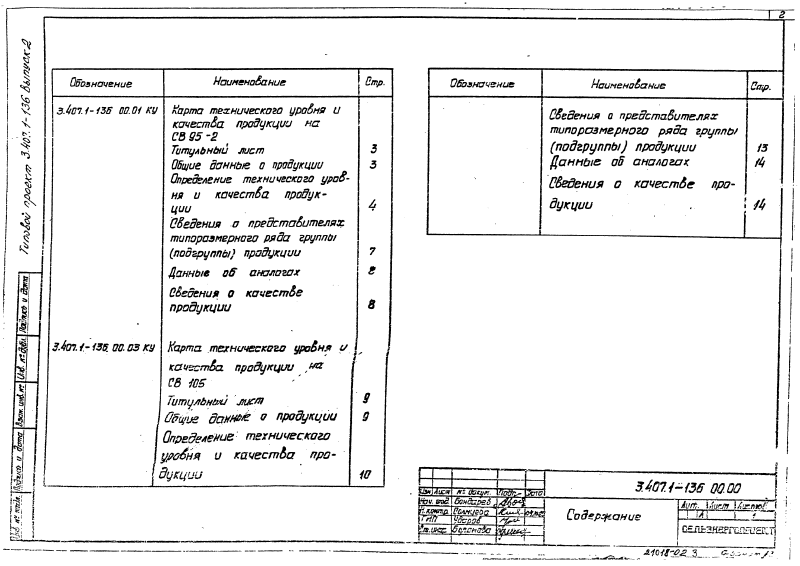Наверх Страница 02
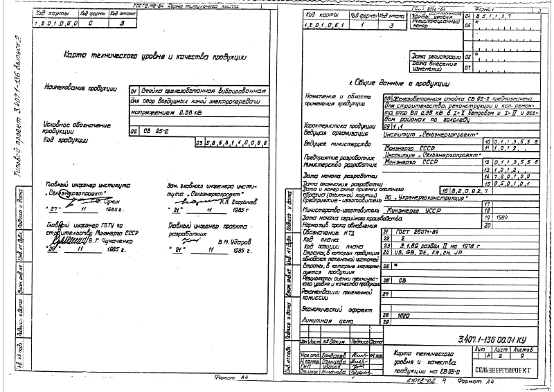Наверх Страница 03
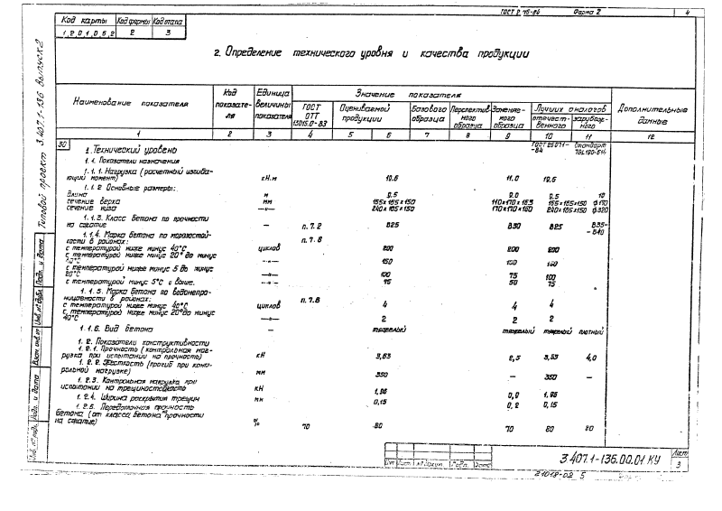Наверх Страница 04
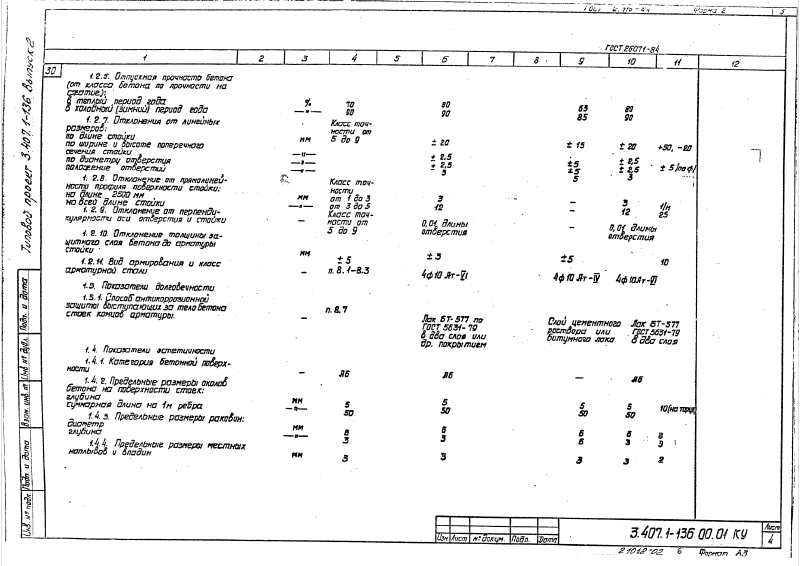Наверх Страница 05
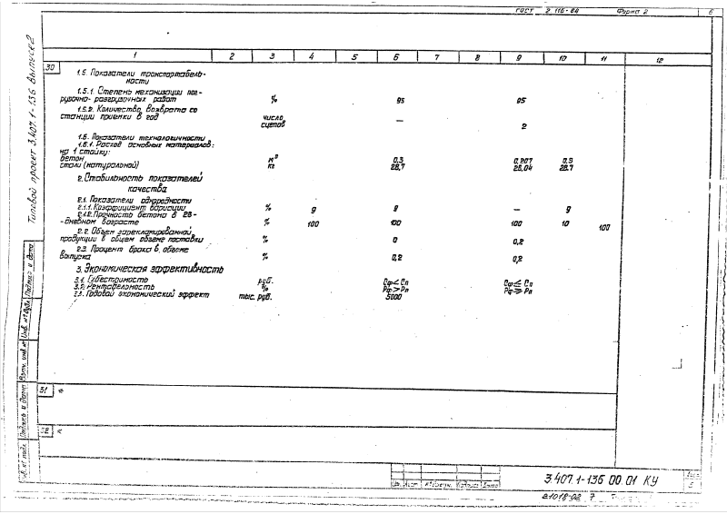Наверх Страница 06
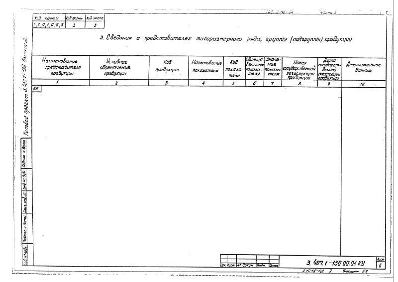Наверх Страница 07
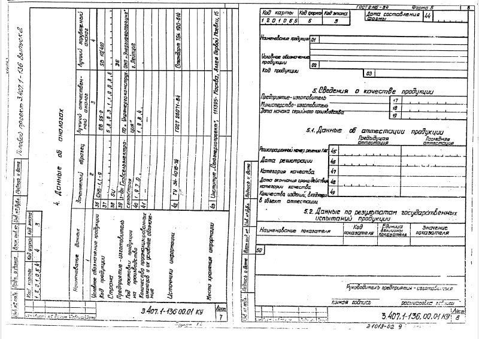Наверх Страница 08
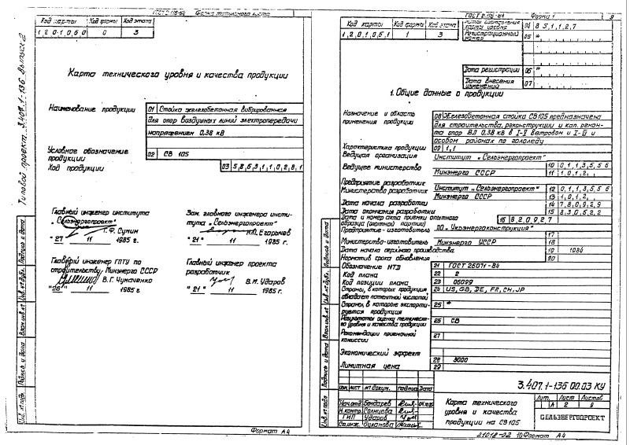Наверх Страница 09
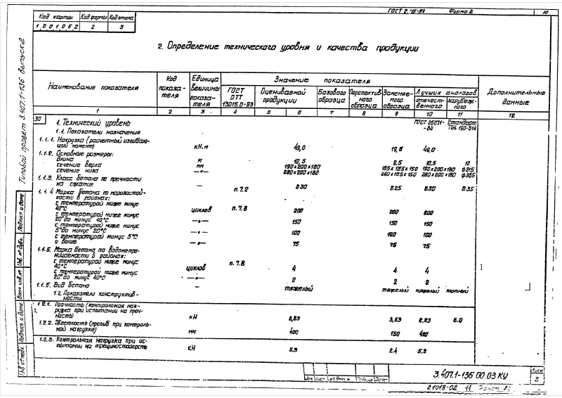Наверх Страница 10
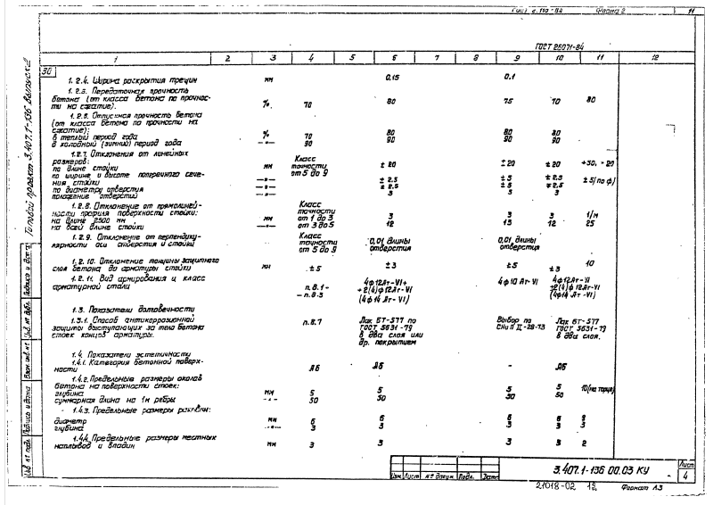Наверх Страница 11
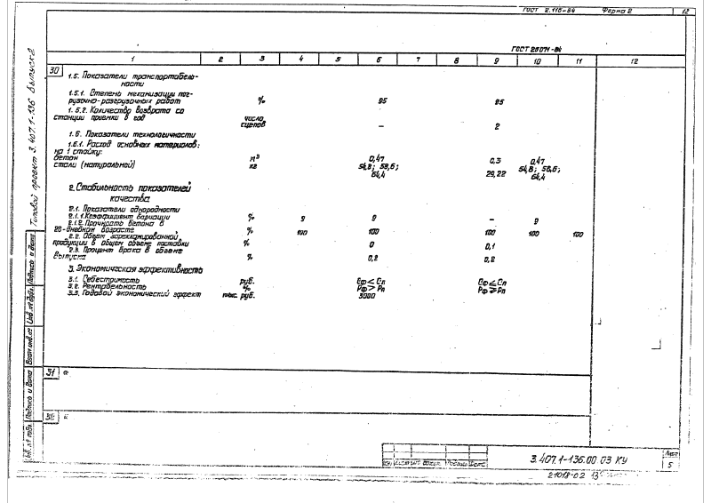Наверх Страница 12
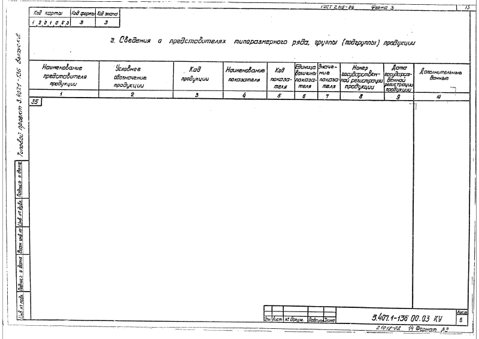Наверх Страница 13
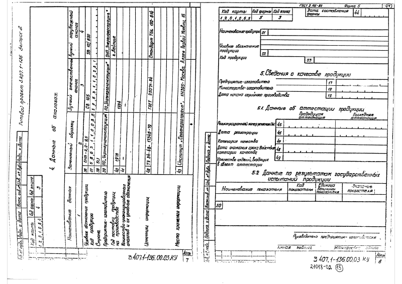Наверх Страница 14